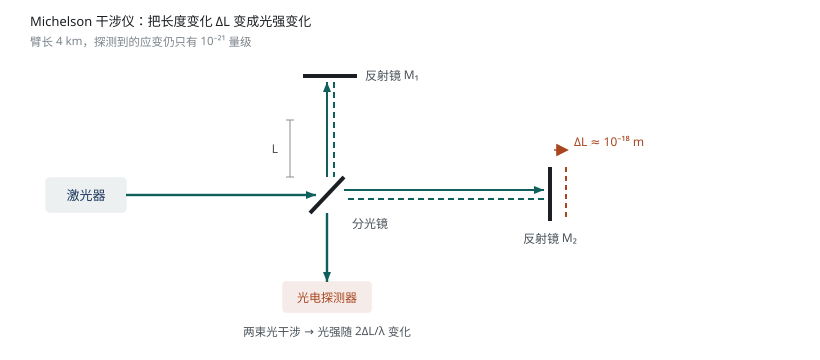
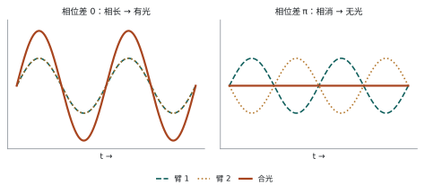

先看清对手有多大 课程定位、一个物理极限案例，以及整门课的路线图
这一章几乎没有公式，但决定了后面所有章节的动机：如果信号永远比噪声大，这门课就不存在。真实情况恰好相反——信号总是先被噪声淹没。
1.1这门课的位置
仪器学科把"从物理量到可用数字"拆成三门课，各管一段：
| 课程 | 管什么 | 留下什么问题 |
|---|---|---|
| 传感器及其原理 | 敏感机理：把被测量变成电参量 | 输出信号往往只有 µV、nA 量级 |
| 测量电路 | 接口与信号调理：放大、变换、数字化 | 放大倍数有上限，因为噪声一起被放大 |
| 微弱信号检测 | 噪声从哪来、怎么算、怎么压 | —— |
本课不是"更精细的电路课"，而是给整条测量链定性能上限的那门课。课件把它拆成四个板块：
四个板块是同一个问题的四个侧面：噪声有多大（Ⅰ）→ 用什么方法绕过它（Ⅱ、Ⅲ）→ 用什么电路实现（Ⅳ）。
1.2引例：引力波探测
课件用引力波做开篇，因为它把"弱信号"推到了人类能做到的极限。
引力波是时空曲率的涟漪，以波的形式从源向外传播，在传播路径上表现为质量受到的起伏潮汐力——效果就是"距离被拉伸或压缩了一点点"。
用迈克尔逊干涉仪测：一束激光被分光镜劈成两路，各走一条臂、被反射镜反射回来、重新合光。两臂等长时两路光同相相长；臂长差一个波长量级时，合光相位就变了。

为什么说它是"弱信号"的极限？把数字摆出来就明白了：引力波对探测器的作用是一个无量纲的应变
臂长 \(L=4\ \mathrm{km}\)，代进去得到 \(\Delta L\sim 4\times10^{-18}\ \mathrm{m}\)——比一个质子还小约两个数量级。而探测器要在这个尺度上分辨变化，同时还要承受地震、热运动、光子散粒噪声的冲击。

光强 \(I\propto\cos^2(\Delta\varphi/2)\)，在暗纹附近斜率最大，单位相位变化引起的光强变化最大——灵敏度最高。
1.3三类检测极限
课件列出的三条限制，恰好预告了本课后半部分要逐个对付的噪声类型：
| 噪声 | 物理来源 | 对应章节 |
|---|---|---|
| 地震噪声 Seismic noise | 地面微震动、人为活动；低频段最强，靠多级悬摆隔振压制 | 外部噪声（2.1.2） |
| 热噪声 Thermal noise | 测试质量与悬丝的内部共振；工作频段内的热噪声来自这些谐振模式的"尾巴" | 3.2 热噪声 |
| 光电子散粒噪声 Shot noise | 到达探测器的光子／光电子数目本身在随机涨落 | 3.4 散粒噪声 |
三条限制之间还要取舍：提高激光功率能压低散粒噪声的相对影响，但会加剧辐射压力噪声、并把更多热量带进镜片。这是典型的"噪声预算"问题。
噪声不是"越小越好"的单一指标，而是一条谱曲线。设计者的工作是在目标频段上把这根曲线压到最低，而不是在所有频率上都追求最小值。
1.4大纲：为什么先讲噪声
| 模块 | 学时 | 解决的问题 |
|---|---|---|
| 概述 | 1 | 问题陈述与路线图（本章） |
| 噪声的基本概念 | 3 | 怎么用统计量描述噪声（第 2 章） |
| 噪声源物理机制 | 8 | 每种噪声的谱从哪来（第 3 章） |
| 器件噪声模型 | 4 | 把噪声折算成器件参数（后续） |
| 微弱信号检测（低噪声电路、锁相放大、采样积分与数字平均） | 16 | 具体手段（后续） |
学时分配本身就是一条论证：噪声相关内容（3+8+4＝15 学时）占了近一半。原因很直接——不知道噪声的谱型和依赖量，任何降噪手段都是盲目的。
为什么"低噪声电路"排在最后（16 学时）
因为电路设计要同时用到三样东西：噪声源的谱密度（第 3 章）、噪声在各级之间的折算规则（第 2 章的功率相加、后续的 Friis 公式）、以及检测方法对带宽的要求（锁相放大、平均）。顺序反过来，就只能背结论。
1.5小结与讨论
① 本课的任务是从噪声中提取信号，它决定整个测量链的性能上限；
② 引力波探测是这条主线的极限案例：\(\Delta L\sim10^{-18}\ \mathrm{m}\)，同时受地震、热、散粒三类噪声限制；
③ 噪声是一条谱，不是单个数字——后面所有方法都是在"谱"上做文章。
课堂讨论（课件原题）
- 你对弱信号检测有什么看法？
- 从应用角度，你的观点是什么？
自测
1. 为什么暗纹处比亮纹处更适合做测量工作点？
因为 \(I\propto\cos^2(\Delta\varphi/2)\) 在暗纹附近斜率最大，单位相位变化引起的光强变化最大，灵敏度最高；亮纹处导数为零，一阶不敏感。
2. 本课为什么把"噪声源物理机制"安排 8 学时，比"噪声基本概念"多得多？
基本概念只提供描述工具（统计量、谱密度），工具本身不产生结论；真正的设计依据是各类噪声的谱型与依赖量（依赖温度？依赖电流？依赖频率的几次方？）。只有知道这些，才能判断某个电路里哪一项占主导、该动哪个参数。